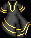

|
|  |
|
| Maeling : -4 |
|
Thanks to Seville's Page
Edge Guild comments:
This place is full of Ogres , stunners and golems that are a bit harder than above , there are also some names ninjas that run around down here and they hit real hard 200-300 and very often , if you are lucky the drop sashes with good attack bonus on them. you will also from time to time see a named ninja down here in a Silver robe ( Tip : They cant charge ) Some of the stunners will have lightning tantos so watch out for them, and the ogres have 4/4 evil rings if you are evil
To get into the Double Ninja Lair (DNL), you will need a item from each of the mini lairs.
Super Enmiss Robes (SER) from the Tengu Lair.
1) Single Ninja Lair: You need a Flecked gem from the Stunner Lair to get in here. Drops Ray-like gem, a +5 neutral katana and a 0/3 blue sash.
2) Golem Lair: You need a pulsing purple gem from the Tengu Lair to get in here. He's not to hard but he does IH once his lair is to the East. Drops Trapped gem and ceramic scales. *you need to look at the lair Golem each time it spawns, if you see him wearing ceramic scales, that is the golem you need to take to the tanner and tan for the correct scales to enter the Double Ninja Lair.*
3) Tengu Lair: You need a Trapped gem from the Golem Lair to get into here. Make sure you have enmiss protection for this one , again not to hard if you are equipped right. Drops Pulsating gems and sometimes Super Enmiss Robes (SER).
4) Stunner Lair : You need a Ray-like gem from the Single Ninja Lair to get in here. Drops Flecked gem and +5 neutral returning tanto with level 8 lightning.
|